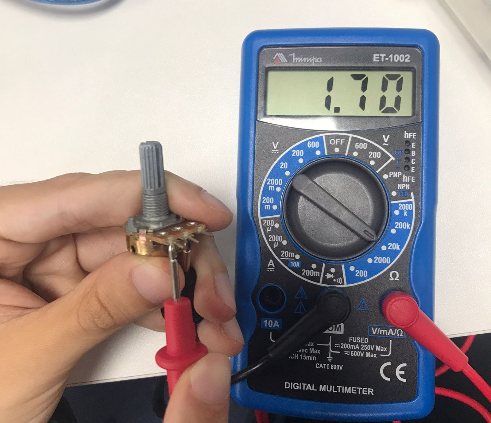
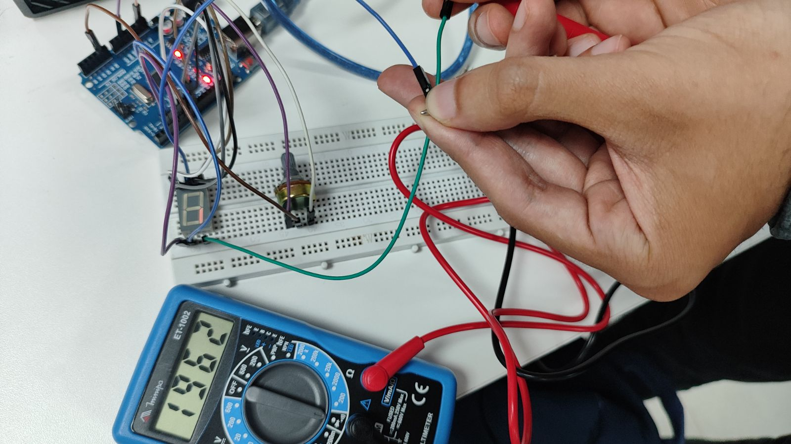

Detalhes
Alguns projetos mais detalhados
Foto da medição da resistência no potenciômetro de 10 k ohms
Foto do teste do display de 7 segmentos no multímetro
Print do monitoramento serial no arduíno injetada

Print do gráfico no arduíno